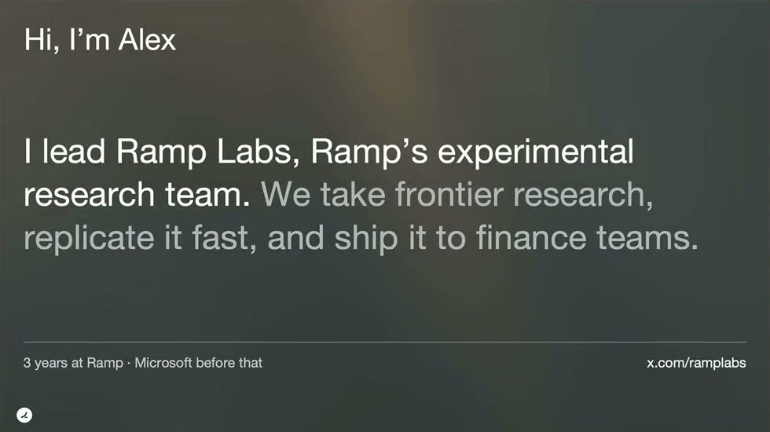
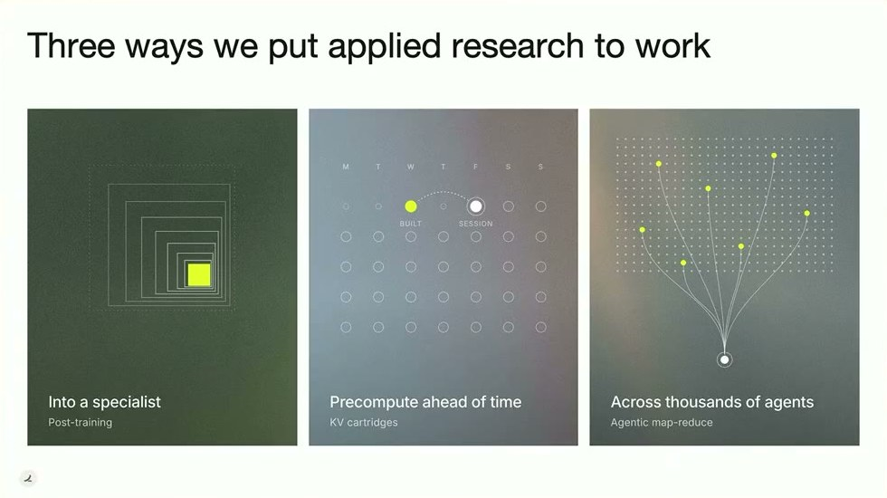

Bitter-lesson economics vs. shipping agents today
Shevchenko opened with the case against his own team's existence. Across Ramp, active LLM use cases grew 123 percent, and while total token spend on top features keeps climbing, unit economics keep dropping as faster, cheaper models arrive. His slide plots the per-unit drops across core workflows: approval intelligence down 78 percent, underwriting down 90 percent, and vendor mailbox down 81 percent. Faced with that curve, people routinely ask why Ramp funds an applied research group instead of waiting for frontier labs to hand down the next model.
His answer goes back to 2023. Building an agent on early GPT-4 meant rigid guardrails, tiny context windows, no thinking tokens, and no ability to backtrack once a run headed in the wrong direction; swapping a single synonym in a prompt could alter agent behavior. Ramp shipped products like Ramp Tour Guide anyway rather than waiting years for GPT-4.5 or GPT-5, serving finance teams immediately. By 2026, MCP servers and stronger reasoning models make baseline agents far easier to wire up, yet going one layer beneath the standard API still unlocks speed and cost gains that generic harnesses leave on the table.

“The use of LLMs has increased 123 percent, while at the same time, a lot of our top features are growing in token spend, but on a unit economic basis, they're actually becoming cheaper”00:00:00
- Active LLM use cases at Ramp grew 123 percent while unit costs fell 78 to 90 percent across major workflows on his slide.
- Waiting for future frontier releases in 2023 would have delayed shipping working tools to finance teams by years.
- Stronger base models raise the floor, moving applied engineering down the stack toward latency, context compression, and scale.
Evidence: transcript 00:00:00 · watch the bitter-lesson opening
Pairing a frontier orchestrator with a post-trained 35B specialist
The first bet came out of Ramp Sheets, a spreadsheet agent launched the previous November before the major frontier labs shipped their own spreadsheet products. Accounting and finance teams spend much of their day in spreadsheets, so Ramp began embedding that harness across other product surfaces. Under heavy multi-sheet workloads, however, the frontier model on the job (shown on his slide as Claude Opus 4.6) bogged down: when a user dropped in a pile of workbooks and asked a CFO-style scenario question, the model burned expensive thinking tokens planning and reading across sheets before answering.
Rather than replacing the frontier planner, Ramp Labs split the job in two. They kept the frontier model as the top-level orchestrator that plans, reasons, and edits the workbook, and partnered with Prime Intellect (transcribed as "Prime Insights") to post-train a 35-billion-parameter Qwen3.5-35B-A3B specialist, labeled FastAsk on the slide, to handle fast financial question-answering over the sheets. On the slide's exact-task accuracy chart, FastAsk reached 66.25 percent at Claude Haiku 4.5 speed, beating Claude Opus 4.6 (61.88 percent), Claude Sonnet 4.6 (59.38 percent), the base Qwen 3.5 model (56.25 percent), and Haiku 4.5 (51.88 percent) by 14 points at the same latency tier, and shipped into production.

“we partnered with the company Prime Insights to post train a Quan 3.5, 35 billion model, and we actually got above Bitcoin six, which was the frontier back then, exact pass accuracy, while also being able to serve at a high crew level of latency.”00:02:20
- Frontier reasoning models stalled on latency and thinking-token cost when inspecting large multi-sheet financial workbooks.
- Keeping a frontier orchestrator while delegating sheet QA to a post-trained
Qwen3.5-35B-A3Bmodel split reasoning from fast lookup. - On Ramp's slide benchmark,
FastAskhit 66.25 percent exact-task accuracy at Haiku-level latency, ahead of Claude Opus 4.6 at 61.88 percent.
Evidence: transcript 00:02:20 · watch the Ramp Sheets specialist walkthrough
Precomputing month-end close into offline KV-cache cartridges
Post-training requires verifiers, rubrics, and training pipelines. Ramp Labs' second bet tackles predictable context loads with much lighter engineering lift: offline KV-cache cartridges that compress 20 to 30 times more context directly into a model's key-value cache ahead of time.
Finance calendars make that predictability concrete. At month-end close (transcribed as "London close"), Ramp already knows that on the first morning of the new month an accountant will open the books to reconcile the general ledger, aging reports, and open invoices. Instead of forcing an agent to retrieve and digest all of those files live while the user waits, Ramp builds a compressed cartridge overnight so the agent opens on day one with the entire month's state already loaded in memory. Because cartridges rely on self-play style compression rather than task-specific reward rubrics, they generalize across workflows more easily than fine-tuning; even if frontier providers eventually expose continuous-learning caches natively in their APIs, building them today gives Ramp's engineers day-one operational fluency.
“cartridges are really interesting family of techniques where you're able to compress a lot of context, up to 20 to 30 times more context, into the KB cache offline and serve it for your agent.”00:05:09
- Offline KV-cache cartridges pack 20 to 30 times more context into memory before a user session begins.
- Predictable finance workflows like month-end close let Ramp precompute ledgers, aging reports, and invoices overnight.
- Cartridges need no custom verifiers or rubrics, and build internal intuition even if model labs later productize similar APIs.
Evidence: transcript 00:05:09 · watch the KV-cache cartridges section
Pentesting Ramp with 10,000 parallel agents and 5x-cheaper open weights
The third production bet applies agentic MapReduce to security testing. Built on top of Ramp's internal cloud agent infrastructure, Ramp Inspect, the team spun up roughly 10,000 parallel pentesting sessions across the codebase, then ran an LLM reduction pipeline to merge duplicates and adversarially reproduce candidate bugs before a human ever looked at a ticket. His slide tracks the funnel: around 10,000 sessions narrowed to roughly 6,000 merged tickets, 3,000 adversarial reproduction runs, and 7 confirmed high-severity vulnerabilities, all patched.
One patched bug showed why brute-force parallel exploration matters. No individual service was broken on its own, yet the swarm chained multiple components together to craft an email payload, shown on the slide closing a Lua raw string delimiter early (]===]) to reach os.execute(...) inside a renderer. Failed attempts cost only tokens, with zero engineer hours spent babysitting dead ends. Just as important, benchmarking models across 25 attempts per bug showed that open-weight models served via Fireworks were roughly five times cheaper per token than frontier reasoning while keeping strong coverage: on the slide's chart, GPT-5.5 high reasoning caught 52.0 percent, Kimi K2.6 caught 36.6 percent, and DeepSeek V4 Pro caught 20.6 percent, making parallel open-weight swarms far more cost-effective per dollar.
“you can actually use open weight models that are up to five times cheaper compared to the frontier reasoning, and because you're set, setting it up as a swarm, the detection rate is not five times lower”00:07:03
- A 10,000-session agentic MapReduce funnel deduplicated and adversarially reproduced tickets down to 7 patched high-severity bugs.
- One multi-component exploit chained an inbound email into closing a Lua string early inside a renderer, a path single-component checks missed.
- Open-weight models like Kimi K2.6 cost roughly 5x less per token than frontier reasoning without a 5x drop in bug detection.
Evidence: transcript 00:07:03 · watch the 10,000-agent pentest breakdown
Turning lab findings into token spend management and latency routing
Every project in the talk aimed at the same two levers, cutting latency and cutting token spend, and Ramp turned that internal tooling into two customer-facing products. His slide notes that unoptimized teams pay up to 4.15 times more per token than necessary. The first product, Token Spend Management, hooks into company API keys and goes past raw per-user or per-team totals: it applies a contextual semantic taxonomy to classify what LLM calls are actually doing, mapping traffic into accounting categories and R&D tax-credit eligibility.
The second product, Ramp Router (transcribed as "Ramp Powder", router.com on the slide), packages the latency and cost-offloading strategies developed with Ramp Labs, including NVIDIA Switchyard integration and smart flex routing that trims token spend by roughly 40 percent over time on the slide's chart while keeping response times fast.
“we created a taxonomy that contextually analyzes and semantically analyzes the LLM usage, so you can actually understand how LLMs are being used outside of just attributing it to a team or a person inside of your company.”00:09:22
- Unoptimized engineering orgs overpay by up to 4.15x per token according to Ramp's slide data.
- Semantic spend analysis classifies API traffic into accounting categories and R&D tax-credit buckets rather than stopping at user or key attribution.
- Ramp Router applies Switchyard and flex-offloading policies to cut both response latency and cost per token.
Evidence: transcript 00:09:22 · watch Token Spend Management and Router
Carrying post-training across model upgrades with Portal
Shevchenko closed with three newer Ramp Labs projects that keep applied work from rotting every time a base model updates. The centerpiece is Portal, a technique for projecting latent post-training updates, such as a LoRA fine-tune on Qwen 3.5, onto newer model checkpoints or even across model families, amortizing the cost of post-training instead of starting from scratch on every release.
Alongside Portal, Ramp Labs uses agents to generate Datadog monitors across product surfaces and automatically refine alert rules as production incidents arrive without a human in the loop, and runs open-ended agentic MapReduce over user sessions to discover semantic usage clusters without predefining the taxonomy upfront. Waiting for the frontier saves effort only if you treat models as static black boxes; building one layer down compounds even as the base models beneath you swap out.
“Notably, one of the really interesting ones is Portal, where we figured out a way of transferring learnings from one post trained to another”00:11:16
- Portal projects latent post-training updates from an older specialist model onto newer model versions, amortizing fine-tuning spend.
- Self-improving monitoring agents create and tune Datadog alerts automatically from live production signals.
- Open-ended agentic MapReduce discovers recurring LLM usage clusters across sessions to reconcile spend against real workflows.
Evidence: transcript 00:11:16 · watch Portal and Ramp Labs research